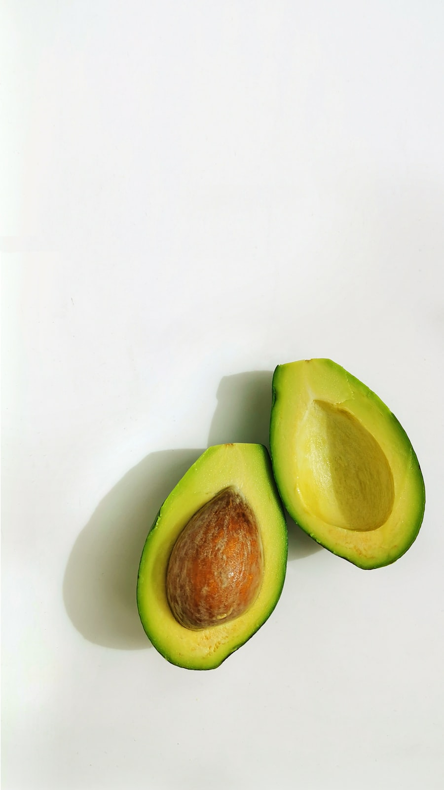

Food is fuel. Master these fundamentals and you'll never need a fad diet again.
Builds and repairs muscle. Aim for a source at every meal — chicken, eggs, fish, tofu, yogurt.
Your body's main energy source. Choose whole grains, fruit and vegetables most of the time.
Support hormones and vitamin absorption. Favour nuts, olive oil, avocado and oily fish.

A good target is around 2–2.5 litres per day, more if you train hard or it's hot. Thirst, dark urine and low energy are signs to drink up.
≈ 8 glasses a day
| Protein | 1 palm |
| Carbs | 1 cupped hand |
| Vegetables | 1 fist |
| Fats | 1 thumb |